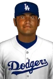

High Minors · RP
Calvin Maduro
- Team
 Hollywood Spoonbills
Hollywood Spoonbills- Organization
- Los Angeles Dodgers
- Position
- RP
- Bats/Throws
- R/R
- Height/Weight
- 6'0", 174 lb
- Born
- Sep 5, 1974 in Santa Cruz, ARU
- Age
- 27
- Uniform
- #22
- Salary
- $400,000
2002 pitching
| Team | Lg | G | GS | W | L | SV | IP | H | R | ER | BB | K | HR | ERA | WHIP | HLD | BS | QS | CG | SHO |
|---|---|---|---|---|---|---|---|---|---|---|---|---|---|---|---|---|---|---|---|---|
| LAD | MLB | 10 | 5 | 0 | 4 | 1 | 33.0 | 39 | 20 | 19 | 8 | 17 | 7 | 5.18 | 1.42 | 0 | 0 | 0 | 0 | 0 |
2002 pitching, advanced
| Team | Lg | BF | Pit | Pit/IP | Opp AVG | BABIP | HBP | WP | IR | IR scored | K/9 | BB/9 | HR/9 | K% | BB% | K-BB% | FIP | ERA+ | GB% | WPA | WAR |
|---|---|---|---|---|---|---|---|---|---|---|---|---|---|---|---|---|---|---|---|---|---|
| LAD | MLB | 142 | 521 | 15.8 | .298 | .294 | 0 | 0 | 3 | 1 (33.3%) | 4.6 | 2.2 | 1.9 | 12.0% | 5.6% | 6.3% | 5.21 | 78 | 41.6% | -0.05 | -0.1 |
Pitching splits
| Split | G | GS | W | L | SV | IP | H | R | ER | BB | K | HR | ERA | WHIP | Opp AVG | K/9 | BB/9 | HR/9 | FIP |
|---|---|---|---|---|---|---|---|---|---|---|---|---|---|---|---|---|---|---|---|
| Home | 1 | 1 | 0 | 1 | 0 | 5.0 | 5 | 2 | 2 | 1 | 4 | 1 | 3.60 | 1.20 | .263 | 7.2 | 1.8 | 1.8 | 4.35 |
| Road | 9 | 4 | 0 | 3 | 1 | 28.0 | 34 | 18 | 17 | 7 | 13 | 6 | 5.46 | 1.46 | .304 | 4.2 | 2.2 | 1.9 | 5.36 |
By month
| Month | G | GS | W | L | SV | IP | H | R | ER | BB | K | HR | ERA | WHIP | Opp AVG | K/9 | BB/9 | HR/9 | FIP |
|---|---|---|---|---|---|---|---|---|---|---|---|---|---|---|---|---|---|---|---|
| April | 6 | 5 | 0 | 3 | 0 | 25.1 | 32 | 17 | 16 | 6 | 12 | 5 | 5.68 | 1.50 | .317 | 4.3 | 2.1 | 1.8 | 5.08 |
| May | 4 | 0 | 0 | 1 | 1 | 7.2 | 7 | 3 | 3 | 2 | 5 | 2 | 3.52 | 1.17 | .233 | 5.9 | 2.3 | 2.3 | 5.62 |
vs left- and right-handed batters
| Split | BF | AB | H | HR | BB | K | Opp AVG | Opp OBP | Opp SLG | K% | BB% |
|---|---|---|---|---|---|---|---|---|---|---|---|
| vs LHB | 67 | 63 | 20 | 3 | 2 | 8 | .317 | .333 | .524 | 11.9% | 3.0% |
| vs RHB | 75 | 68 | 19 | 4 | 6 | 9 | .279 | .333 | .515 | 12.0% | 8.0% |
Opponents by situation
| Situation | PA | AB | H | 2B | 3B | HR | RBI | BB | K | AVG | OBP | SLG | OPS |
|---|---|---|---|---|---|---|---|---|---|---|---|---|---|
| Bases empty | 79 | 74 | 25 | 5 | 0 | 3 | 3 | 5 | 8 | .338 | .380 | .527 | .907 |
| Runners on | 63 | 57 | 14 | 3 | 0 | 4 | 16 | 3 | 9 | .246 | .274 | .509 | .783 |
| Runners in scoring position | 41 | 36 | 11 | 3 | 0 | 4 | 16 | 2 | 7 | .306 | .325 | .722 | 1.047 |
| RISP, two outs | 16 | 16 | 7 | 2 | 0 | 3 | 9 | 0 | 3 | .438 | .438 | 1.125 | 1.562 |
| Innings 1-3 | 65 | 58 | 19 | 5 | 0 | 2 | 10 | 4 | 9 | .328 | .359 | .517 | .877 |
| Innings 4-6 | 60 | 58 | 16 | 3 | 0 | 4 | 8 | 2 | 5 | .276 | .300 | .534 | .834 |
| Innings 7-9 | 11 | 10 | 3 | 0 | 0 | 1 | 1 | 1 | 2 | .300 | .364 | .600 | .964 |
| Extra innings | 6 | 5 | 1 | 0 | 0 | 0 | 0 | 1 | 1 | .200 | .333 | .200 | .533 |
Situational splits are rebuilt from every plate appearance in the export (base/out state when the PA began). "RBI" counts runs batted in on that PA.
2002 pitching game log
| Date | Opp | Score | Dec | IP | H | R | ER | BB | K | HR | BF | PC | GB | FB | QS | WPA | |
|---|---|---|---|---|---|---|---|---|---|---|---|---|---|---|---|---|---|
| May 13 | @BOS | L 2-7 | 3.0 | 3 | 1 | 1 | 0 | 1 | 1 | 12 | 44 | 3 | 5 | -0.023 | |||
| May 8 | @ARI | L 8-9 | L | 1.2 | 2 | 1 | 1 | 2 | 1 | 0 | 9 | 37 | 1 | 3 | 0.160 | ||
| May 7 | @ARI | W 6-4 | S | 0.2 | 0 | 0 | 0 | 0 | 1 | 0 | 2 | 8 | 0 | 1 | 0.197 | ||
| May 2 | @ATL | L 3-9 | 2.1 | 2 | 1 | 1 | 0 | 2 | 1 | 9 | 31 | 3 | 2 | -0.008 | |||
| Apr 30 | @ATL | L 3-11 | 3.0 | 4 | 3 | 3 | 0 | 2 | 2 | 13 | 45 | 2 | 5 | -0.016 | |||
| Apr 23 | @OAK | L 2-13 | GS | L | 4.2 | 7 | 5 | 5 | 1 | 3 | 2 | 22 | 87 | 4 | 7 | -0.192 | |
| Apr 18 | @SEA | L 3-7 | GS | L | 6.1 | 11 | 5 | 4 | 2 | 0 | 0 | 29 | 84 | 7 | 8 | -0.195 | |
| Apr 12 | vsDET | L 2-3 | GS | L | 5.0 | 5 | 2 | 2 | 1 | 4 | 1 | 20 | 78 | 3 | 7 | -0.043 | |
| Apr 7 | @BrGo | W 3-2 | GS | 5.0 | 5 | 2 | 2 | 2 | 3 | 0 | 22 | 89 | 7 | 5 | 0.009 | ||
| Apr 2 | @MIL | L 3-11 | GS | 1.1 | 0 | 0 | 0 | 0 | 0 | 0 | 4 | 18 | 2 | 2 | 0.060 |
2002 fielding by position
| Team | Lg | Pos | G | GS | Inn | TC | PO | A | E | DP | FPct | ZR | Arm | Framing | SB | CS | CS% | PB |
|---|---|---|---|---|---|---|---|---|---|---|---|---|---|---|---|---|---|---|
| LAD | MLB | P | 10 | 5 | 33.0 | 6 | 3 | 3 | 0 | 0 | 1.000 | 0.4 | - | - | - | - | - | - |
ZR (zone rating), Arm and Framing are OOTP's runs-above-average figures. SB/CS/CS% are base stealers against him as a catcher.
Career pitching
| Year | Team | Lvl | G | GS | W | L | SV | IP | H | R | ER | BB | K | HR | ERA | WHIP | WAR |
|---|---|---|---|---|---|---|---|---|---|---|---|---|---|---|---|---|---|
| 1992 | T | Rookie | 13 | 12 | 1 | 4 | 0 | 71.0 | 56 | 29 | 18 | 26 | 66 | 2 | 2.28 | 1.15 | 2.0 |
| 1993 | T | Rookie | 14 | 14 | 9 | 4 | 0 | 91.0 | 90 | 46 | 40 | 17 | 83 | 4 | 3.96 | 1.18 | 3.1 |
| 1994 | RASP | A | 27 | 26 | 9 | 8 | 0 | 152.0 | 132 | 86 | 72 | 59 | 137 | 18 | 4.26 | 1.26 | 1.8 |
| 1995 | T | AA | 7 | 7 | 0 | 6 | 0 | 35.0 | 39 | 28 | 20 | 27 | 26 | 3 | 5.14 | 1.89 | 0.0 |
| 1995 | RASP | A | 20 | 20 | 8 | 5 | 0 | 122.0 | 109 | 43 | 40 | 34 | 120 | 16 | 2.95 | 1.17 | 1.8 |
| 1996 | PHI | Majors | 4 | 2 | 0 | 1 | 0 | 15.1 | 13 | 6 | 6 | 3 | 11 | 1 | 3.52 | 1.04 | 0.3 |
| 1996 | T | AAA | 8 | 8 | 3 | 5 | 0 | 43.0 | 49 | 25 | 23 | 18 | 40 | 8 | 4.81 | 1.56 | -0.1 |
| 1996 | T | AA | 19 | 19 | 9 | 7 | 0 | 124.0 | 116 | 50 | 45 | 36 | 87 | 8 | 3.27 | 1.23 | 2.5 |
| 1997 | PHI | Majors | 15 | 13 | 3 | 7 | 0 | 71.0 | 83 | 59 | 57 | 41 | 31 | 12 | 7.23 | 1.75 | -0.7 |
| 1997 | ScRe | AAA | 13 | 13 | 6 | 4 | 0 | 79.0 | 71 | 48 | 44 | 57 | 53 | 10 | 5.01 | 1.62 | -0.4 |
| 1998 | ScRe | AAA | 28 | 27 | 12 | 9 | 0 | 177.0 | 211 | 123 | 118 | 68 | 120 | 28 | 6.00 | 1.58 | 0.2 |
| 1999 | T | AAA | 29 | 28 | 11 | 11 | 0 | 169.0 | 179 | 88 | 75 | 60 | 149 | 23 | 3.99 | 1.41 | 1.5 |
| 2000 | BAL | Majors | 15 | 2 | 0 | 0 | 0 | 23.1 | 29 | 25 | 25 | 16 | 18 | 8 | 9.64 | 1.93 | -0.7 |
| 2000 | T | AAA | 4 | 1 | 1 | 0 | 0 | 4.0 | 1 | 1 | 0 | 4 | 6 | 1 | 0.00 | 1.25 | -0.1 |
| 2000 | RASP | A | 1 | 1 | 0 | 0 | 0 | 2.0 | 1 | 0 | 0 | 0 | 6 | 0 | 0.00 | 0.50 | 0.1 |
| 2001 | BAL | Majors | 22 | 12 | 5 | 6 | 0 | 93.2 | 83 | 44 | 44 | 36 | 51 | 10 | 4.23 | 1.27 | 0.7 |
| 2001 | T | AAA | 12 | 11 | 2 | 7 | 0 | 67.0 | 61 | 37 | 30 | 22 | 48 | 9 | 4.03 | 1.24 | 0.3 |
| 2002 | LAD | MLB | 10 | 5 | 0 | 4 | 1 | 33.0 | 39 | 20 | 19 | 8 | 17 | 7 | 5.18 | 1.42 | -0.1 |
| Top level | 66 | 34 | 8 | 18 | 1 | 236.1 | 247 | 154 | 151 | 104 | 128 | 38 | 5.75 | 1.49 | -0.5 |
Career batting (as a pitcher)
Seasons before 2002 are the player's real-life record, listed under the franchise that holds that history in this universe. "Top level" totals count major-league-level seasons only.
Service time & contract status
- Service time
- 1.122 (294 days; 44 this season)
- Status
- Pre-Arb
- Arbitration
- 2004 season (projected)
- Free agency
- After the 2006 season (projected)
- Options
- 2 used, 1 remaining (of 3)
Service time is Y.DDD: major-league service years plus days toward the next year (172 days = 1 year, from the league rules). Status follows the league rules: under 3 years Pre-Arb, 3 to 5 years Arb 1/2/3, 6+ years FA-eligible. The export's arbitration_offering is 0 and no player has gone through arbitration yet (has_received_arbitration is 0 for everyone), so these statuses come from the rules, not from hearings. Projected years assume a full major-league season of service every year from 2002 on.
Contract
| Year | Salary |
|---|---|
| 2002 | $400,000 |
1-year contract with  Los Angeles Dodgers.
Los Angeles Dodgers.
Injury history (2002)
| Date | Expected days out | Day-to-day | Setbacks |
|---|---|---|---|
| Apr 2 | 7 | Yes | 0 |
Most frequent matchups hitters he has faced
| Batter | AB | H | HR | AVG |
|---|---|---|---|---|
| Sean Burroughs | 4 | 1 | 0 | .250 |
| Corey Koskie | 3 | 3 | 0 | 1.000 |
| Saul Soto | 3 | 3 | 0 | 1.000 |
| Todd Sears | 3 | 2 | 0 | .667 |
| Bobby Higginson | 3 | 2 | 0 | .667 |
| Marty Malloy | 3 | 1 | 0 | .333 |
| Jose Offerman | 3 | 1 | 0 | .333 |
| Coco Crisp | 3 | 1 | 0 | .333 |
| Esteban German | 3 | 1 | 0 | .333 |
| David Wright | 3 | 1 | 0 | .333 |
| Orlando Merced | 3 | 0 | 0 | .000 |
| Terry Shumpert | 3 | 0 | 0 | .000 |
| Derrek Lee | 3 | 0 | 0 | .000 |
| Kevin Nicholson | 3 | 0 | 0 | .000 |
| Rocco Baldelli | 3 | 0 | 0 | .000 |
In our stories 1
- MLB MLB at 40 Games: State of the League Alexander Hadley